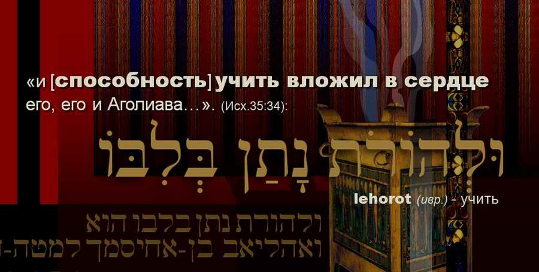
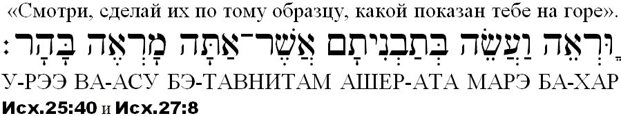
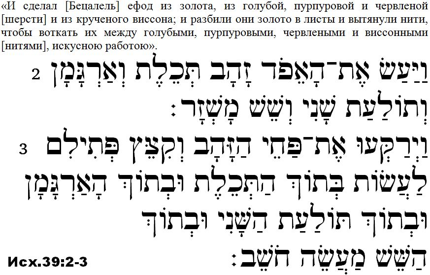

Арт-мидраш · Библия и художник
Школа Бецалеля. ПРИЗВАНИЕ УЧИТЬ
Бецалель - первый художник-израильтянин был призван не только для для устроения в пустыне Синайской святилища Богу Всевышнему. Там же в пустыне, Бог повелевает ему учить народ.

Бецалель. ПРИЗВАНИЕ УЧИТЬ
Повествуя об исполнении художника Духом Божьим в его мудростью, ведением и разумением и всяким искусством, Тора говорит также о его призвании учить других, как написано: «И способность учить вложил в сердце его».
Возникает вопрос: чему мог учить художник?
- Очевидно, тому, чему научить может только художник! Чему же он может научить? Идет ли речь о ремесле, которым он владел? Должен ли был Бецалель из свох собратьев, которые еще вчера месили грязь и смешивая ее с соломой изготавливали кирпичи, сделать художников?
Если задуматься, вопрос этот не праздный.
Тора говорит о том, что весь процесс строительства, начиная со сбора пожертвований и заканчивая освящением готовой, собранной и установленной скинии со всеми ее принадлежностями, занял 6 месяцев.
Речь идет обо всем объеме работ, произведенных мастерами – со всеми частями и принадлежностями мишкана, включая священные одежды Аарона и его сыновей. Т.е. за эти шесть месяцев требовалось не только обучить вчерашних глиномесов тонкой работе, но и одновременно с этим выполнить всю работу. Ко всему прочему, Бог настаивает (Он несколько раз возвращается к этому требованию), чтобы работа была сделана искусно, т.е. речь идет об искусстве высочайшего уровня.

При том надо помнить, что виды творчества, о которых мы говорим здесь включают в себя обработку драгоценных камней, литье и обработку золота, серебра, меди, резьба, изготовление льняного полотна и великолепной парчи с золотой нитью... Многие из этих специальностей требуют серьезной подготовки и опыта и высокого мастерства.
Вот пример описания одной из работ:

Мастера, способные на это учились годами и даже десятилетиями, набирая опыт, познавая секреты от отца к сыну. Только так они могли достигнуть совершенства в своем творчестве.
Я слышал рассказ потомственного (в третьем поколении) владельца лавки тканей в Старом городе Иерусалима сирийца Абу Халаб Биляля. Он утверждает, что в наши дни производство специальной парчевой хужожественной ткани с золотой ниткой из селения Тадмор (Сирия) – очень трудоемкая и дорогостоящая (десятки тыс.долл за метр) работа. На изготовление 1-го метра ткани уходит сорок дней работы.
Из сказанного становится ясно, что те, котого должен был учить Бецалель, уже были профессионалами и мастерами высокого уровня. Очевидно, из Египта вышли не только месители грязи...
Сыны израилевы были рабами фараона, но они жили в своих городах и своих домах, вели хозяйство, разводили скот, занимались ремеслом и т.п., и, кроме того, у них была повинность (барщина) – изготовление кирпичей для обширного фараонова строительства.
А если все это так, то необходимо вновь задаться вопросом: чему же Бецалель учил мастеров?
Если верна наша теза о том, что из Египта вышли не только не квалифицированные рабы, но и мастера своего дела, нам надлежит разобраться чему в таком случае Всевышний поручил Бецалелю их обучать?
Видимо, он учил их тому, что не связано непосредственно с техникой и технологией. Он учил их чему-то гораздо более существенному и глубокому.
Думаю, он учил их видеть и слышать, и даже сверх обычной для художника способности видеть пропорции, цвет, образ, словом то, что обычный человек не видит. Эти две способности «видеть» и «слышать», прозревать не только физическую земную реальность, но и высшую небесную. Без этого они просто были не в состоянии воплотить образы небесного в конкретные земные осязаемые произведения. Они должны были стать чуткими к совершенству Божего творения, чтобы соответствовать требованиям Творца небес.
Вторая вещь, которой Бецалель должен был научить – вдохновение. Творчество, к которому Бог призвал Израиля – соавтороство с Духом Божьим, где речь идет о совместном творении человеков с Творцом вселенной.
По всей вероятности, для сего дела необходимы были дары, полученные Бецалелем и объявленные при его избрании Творцом пред всем Израилем:
Для того, чтобы Бецалель был способен созидать и обучать таким великим предметам, Бог исполняет его Духом Божьим.
«Я исполнил его Духом Божьим, мудростью, разумением, ведением и всяким искусством, …и в сердце всякого мудрого вложу мудрость, дабы они сделали все, что Я повелел тебе».
וָאֲמַלֵּא אֹתוֹ רוּחַ אֱלֹהִים בְּחׇכְמָה וּבִתְבוּנָה וּבְדַעַת וּבְכׇל־מְלָאכָה׃ …
וּבְלֵב כׇּל־חֲכַם־לֵב נָתַתִּי חׇכְמָה וְעָשׂוּ אֵת כׇּל־אֲשֶׁר צִוִּיתִךָ׃
Что же скажем, чему Бецалель учил своих соплеменников и коллег?
Сделаем предположение: для этого Бог желал, чтобы Бецалель делился с другими дарами неба, которыми наполнил его Всевышний.
И им надлежало научиться особенным отношениям с Духом Божьим, дабы иметь возможность небесное низводить на землю через творчество. В этом попытаемся разобраться в следующих постах.
Следующая из серии "Школа Бецалеля" статья "РОДИТЕЛЬ". В ней читайте о слове "ОРЭ" /родитель/ - первом из трех родственных слову "учить".
автор: Эфраим Калиш /TORAART/
ЕСЛИ ЭТОТ МАТЕРИАЛ БЫЛ ВАМ ПОЛЕЗЕН, ПОЖАЛУЙСТА, ПОДЕЛИТЕСЬ ИМ С ДРУЗЬЯМИ
другие статьи по теме:
БЕЦАЛЕЛЬ — СЫН СВЕТА. Призвание. ч.I БЕЦАЛЕЛЬ (Веселеил) — СЫН СВЕТА. Под покровом Всевышнего, ч.II БЕЦАЛЕЛЬ — СЫН СВЕТА. Свет Господень, ч.III БЕЦАЛЕЛЬ (Веселеил) — СЫН СВЕТА. Дед ХУР, ч.IV БЕЦАЛЕЛЬ — СЫН СВЕТА. Славящий Бога, ч.V Призван быть ОЧИЩЕННЫМ. Дед Бецалеля — ХУР --- Школа Бецалеля. ПРИЗВАНИЕ УЧИТЬ Школа Бецалеля. РОДИТЕЛЬ Школа Бецалеля. Сердце учителя БЫЛИ РУКИ ЕГО — ВЕРА /Исх.17:12/. Художник и вера Святилише — МИШКАН и МИКДАШ Бецалель. МЕНОРА — знак школы Прямое ПОПАДАНИЕ В ЦЕЛЬ